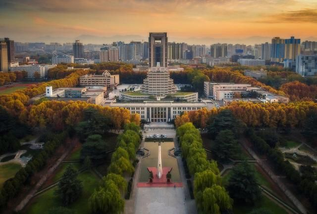

关于大学期间我个人的学习规划，我认为自然是学习与社会实践相结合。首先，在学习方面，
我认为大一是给后期专业课的学习打下基础的关键时期，具有一定的数理基础才能为我们后期的学习做好铺垫。
数学知识是大一期间的重要部分，这一部分的内容需要重点去学习。这学期修读了计算机科学技术导论课程，这引起了我强烈的兴趣，
在专业分流时如果我有幸能够选择进入计算机专业学习，我觉得我一定会努力学习专业课知识，积攒经验。
计算机科学技术专业是一门很具有挑战性的专业，需要非常高的专业素养。我将会利用课余时间学习编程知识和计算机程序设计相关操作。
另外在社会实践方面，我认为利用课余时间进行社会实践活动可以更好的拓宽自己的视野，增长自己的才干。利用课余时间做实践活动服务他人，
也能锻炼自己。今年我加入了我校的红十字协会的应急医疗部门，并且利用这学期的课余时间参加了多个保障项目，如新生杯网球赛保障、
体测保障等。后期在学习生活上一定要严格约束自己，保持自律，用积极向上与勤奋的心态面对学业学习。